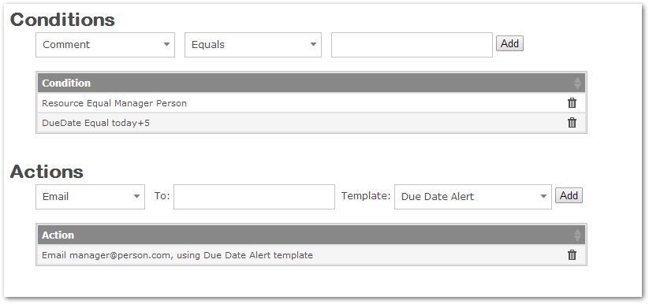
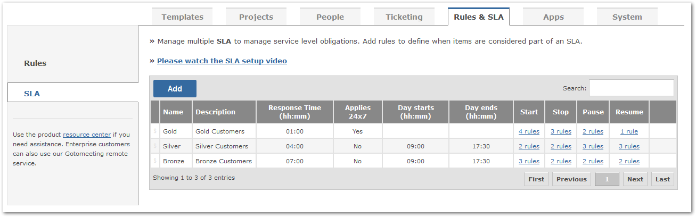
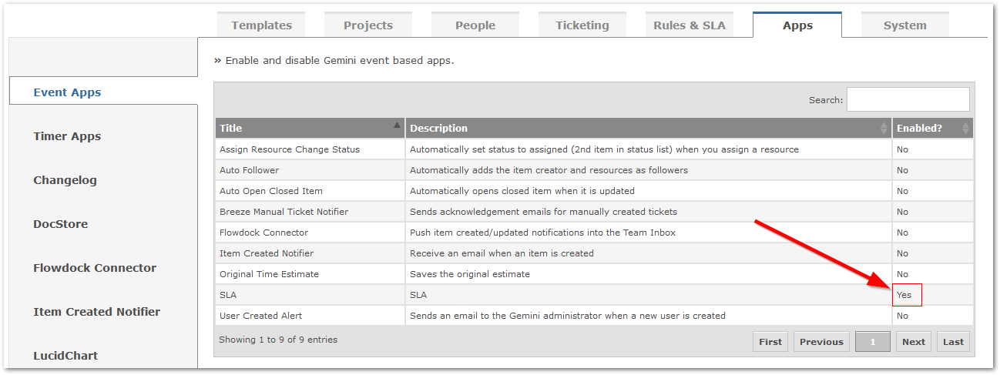
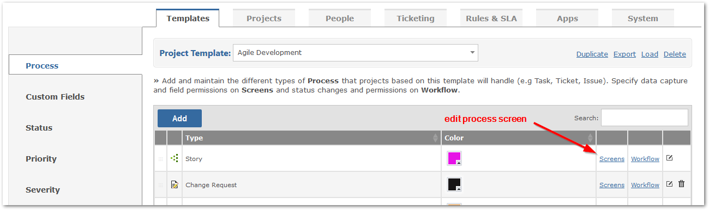
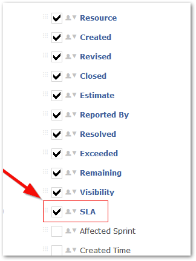
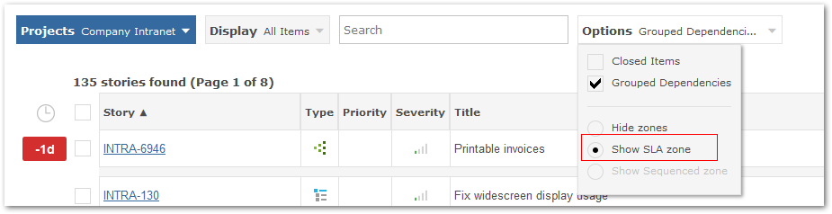
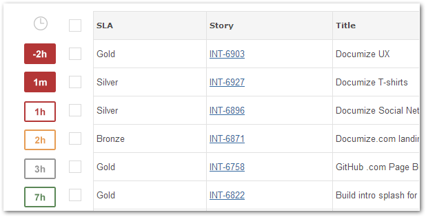

Gemini provides a sophisticated rules engine to help you define complex conditional checks with actions to route communications and set or change data.

The following table details all condition rules.
| Condition | Check what? |
|---|---|
| Comment | The contents of a comment |
| Commented | The item has a comment created, true or false |
| Comment Source | Who created the comment |
| Comment Source Type | How the comment was created. E.g. check if comment created by Email Reply (Email) or an email converted to a comment (Breeze) |
| Description | The description |
| Due Date | The value of due date. You can specify dates using built-in special keywords with + and - operators e.g. start-week or end-month+10 etc. |
| Emails Count | How many emails sent to a customer using Breeze Email Reply |
| Issue | Check if the issue has been created or updated |
| Priority | The value of priority |
| Project | If the item belongs to one or more specific projects |
| Resolution | The value of resolution |
| Resource | The name of the user who is assigned to the item |
| Severity | The value of severity |
| Source | Who created the item |
| Source Type | How the item was created. E.g. check if the item was created from an email (Breeze) |
| Start Date | The value of start date. You can specify dates using built-in special keywords with + and - operators e.g. today or start-week-2 etc. |
| In SLA | Check if the item is in an SLA, true or false |
| SLA | Which SLA an item is part of |
| SLA Time Left | How much time is left before the SLA is breached |
| SLA Time Passed | How much time has passed in the SLA |
| Title | The value of title |
| Type | The value of type |
| Name of Custom Field | The value of custom field |
The following table details all actions.
| Action | What Gemini should do if one or more conditions is met. |
|---|---|
| Send an email to any email address of your choice using an Alert Template of Generic Type. Gemini will only send one email per item | |
| Set Field | Set the field value. For percent complete you can use auto which will calcuate it based on time logged vs estimated |
| Set Custom Field | Set the custom field value |
| Veto Action | Stop the creation or update of an item |
| Stop Clock | Stop the SLA timer |
| Pause Clock | Pause the SLA timer |
| Resume Clock | Resume the SLA timer |
You can send emails to specific users for an email action:
| Token | Email Sent To |
|---|---|
| {resource} | Email the users who are assigned to the item |
| {reporter} | Email the user who has created the item |
| {follower} | Email the users who are followers of the item |
Gemini SLA lets you define different levels of customer treatment so you can meet your obligations and focus on what matters right now.
.
You will want to first ensure that the SLA app is enabled. Please navigate to Customize > Apps > Event Apps, from here, check the checkbox to enable the "SLA" app.

Ensure that the SLA Field is visible for those processes that you wish to associate with the SLA app.

Select the screen option (viewing section) for the Process that you want to associate with SLA.

Verify that on the items grid page you can see the SLA in the Options drop down

